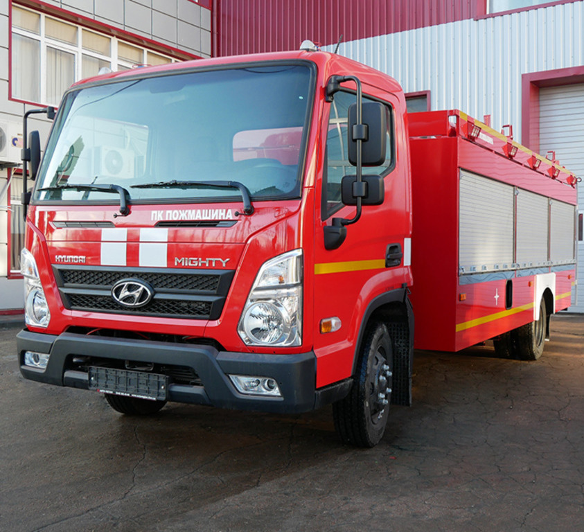

Пожежна автоцистерна — найбільш поширений тип основного пожежного автомобіля, різновид автоцистерни. Обладнаний пожежним насосом, ємностями для зберігання рідких вогнегасних речовин (води та піноутворювача, використовуваного для одержання повітряно-механічної піни), засобами їх подачі. Призначається для доставки до місця пожежі бойового розрахунку, пожежно-технічного озброєння і устаткування, проведення дій по його гасінню та аварійно-рятувальних робіт, також використовується для подачі вогнегасної речовини і для підвезення води у безводних районах.
Автоцистерни пожежні з об'ємом вогнегасних засобів до 3 тон
АЦ-3,2-40 (TGM 15.250)-163М
